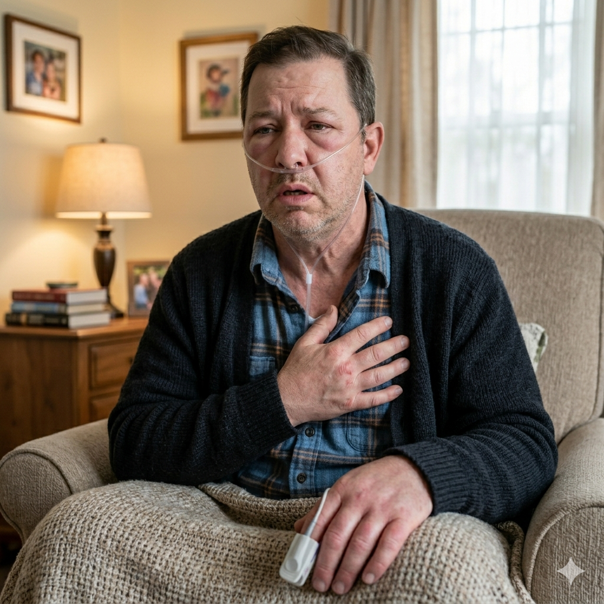

Symptom Management
& Emergencies
This module moves from routine symptom management to the high-stakes environment of acute palliative emergencies. We focus on maintaining patient dignity while managing clinical crises with confidence and compassion.
Work through each section in order. This module includes drag-and-drop activities, clickable clinical diagrams, a drag-to-reorder sequencing exercise, and five real-world case study MCQs.
The pathophysiology of end-of-life symptoms including respiratory secretions and nausea
Red flag signs of palliative emergencies — MSCC, SVCO, hypercalcaemia, and haemorrhage
The ABC framework to manage catastrophic haemorrhage calmly and effectively
The correct clinical steps for managing a prolonged seizure in community and hospice settings
Apply your knowledge to five real-world clinical case presentations across all emergency types
Managing the Respiratory Tract
Breathlessness (dyspnoea) and terminal secretions are two of the most distressing respiratory symptoms in palliative care — often more frightening for the family than for the patient themselves.
As patients become unable to swallow, secretions pool in the throat producing a gurgling sound. Research consistently shows this is rarely distressing to the unconscious patient — but it can be deeply upsetting for families. Your role includes explaining this clearly and sensitively.
Drag each card into the correct column. If you check your answers and a card is incorrect, it will be returned to the pool so you can try again.
Managing the Gastrointestinal Tract
Nausea and dehydration at end of life require a patient-centred approach that challenges some common assumptions about nutrition and hydration.
Nausea is multifactorial — causes include constipation, opioids, raised intracranial pressure, or metabolic disturbance. Matching the antiemetic to the cause is more effective than a one-size-fits-all approach.
- Review all medications — opioid dose adjustment may be needed
- Constipation is a common, treatable cause — assess bowel function at every visit
- Small, frequent, cold meals may be better tolerated than hot food
- Ginger, acupressure, and upright positioning can all help
Evidence consistently shows IV or subcutaneous fluids rarely relieve thirst at end of life and can increase suffering. Thirst is driven by dry mouth, not dehydration — treat the mouth, not the blood tests.
- IV fluids at end of life risk: pulmonary oedema and prolonged dying
- Moist swabs, lip balm, mouth sprays relieve thirst effectively
- Families equate fluids with care — a sensitive conversation is essential
- Mouth care every 1–2 hours provides more relief than a bag of IV fluids
Palliative Emergencies
A palliative emergency is a sudden change that, if not managed promptly, will cause extreme distress or rapid irreversible deterioration. Knowing the difference between expected decline and a clinical emergency is a fundamental skill.
Terminal Haemorrhage
Catastrophic haemorrhage is rare but can occur when a tumour erodes a major vessel — most commonly in head and neck cancers or those involving the carotid artery. It requires a calm, structured response.
The cards below show actions without labels. Select them in the order you would act — think about what matters first when a patient is distressed and bleeding.
Hypercalcaemia
Malignant hypercalcaemia is most common in squamous cell lung cancer and breast cancer. It is the most common metabolic emergency in oncology — and it is treatable.
- Polyuria (excessive urination)
- Polydipsia (excessive thirst)
- Nephrocalcinosis (calcium deposits in kidney)
- Deep, aching bone pain
- Pathological fractures
- Proximal muscle weakness
- Nausea and vomiting
- Constipation (most common GI feature)
- Abdominal pain and anorexia
- Confusion and cognitive impairment
- Lethargy and profound fatigue
- Depression, anxiety, and in severe cases — coma
Metastatic Spinal Cord Compression (MSCC)
MSCC is an oncological emergency. Early identification and prompt action can mean the difference between walking and permanent paralysis. Delay in diagnosis is the most common reason for poor outcomes.
NICE guidance (NG127) requires all suspected MSCC be treated as an emergency. The patient should be nursed flat with log-rolling precautions until MSCC is excluded. Do not wait for imaging before implementing spinal precautions.
- New or worsening back or neck pain — especially band-like pain around the chest or abdomen
- "Heavy" or weak legs — difficulty walking, stumbling, or inability to stand
- Sensory changes — numbness, tingling, or a level below which sensation is reduced
- Bladder or bowel dysfunction — retention, incontinence, or sudden-onset constipation
- Nurse flat — spinal precautions until imaging confirms or excludes compression
- High-dose dexamethasone — reduces spinal cord oedema (typically 16mg immediately)
- Urgent MRI whole spine — within 24 hours of suspected diagnosis
- Refer urgently — to oncology or spinal surgery team immediately
Superior Vena Cava Obstruction (SVCO)
SVCO occurs when a tumour in the mediastinum compresses the superior vena cava, obstructing venous return from the upper body. It presents dramatically and requires urgent treatment.

Progressive swelling of the face, particularly around the eyes, is one of the most visible signs of SVCO. Often worse in the morning as fluid redistributes overnight. The conjunctivae may appear reddened.
Non-pulsatile distension of the external jugular veins, visible even when sitting upright. In severe cases, veins may be visible across the chest wall (collateral veins).
Swelling of both arms as venous drainage from the upper limbs is obstructed. The skin feels tense and pitting oedema is common. Patients may be unable to wear clothing or jewellery.
Compression of airways by the mediastinal tumour causes dyspnoea, which can be severe. Patients often describe a sense of suffocation. Chest pain may occur if the pleura or pericardium is involved.
Managing Seizures
Seizures in palliative patients may occur due to brain metastases, metabolic disturbance, or medication. Management requires a calm, structured approach — particularly in community and hospice settings.
Drag the steps up or down to reorder them. Change your mind as many times as you like before checking.
-
Monitor & Seek Specialist AdviceRecord duration and nature. Inform the palliative care team. Review anticipatory prescribing to prevent recurrence.
-
Administer Buccal Midazolam (or SC if access is ready)First-line anticonvulsant in community settings — typically 10mg buccal. Follow the prescribed protocol.
-
Safe Environment & AirwayMove hazards away, do not restrain, place in recovery position after tonic-clonic phase, check airway patency.
-
Check Blood Glucose (BM)Exclude hypoglycaemia as a reversible, treatable cause before administering anticonvulsants.
Who Am I?
Five clinical presentations. Read each patient's description, then answer the question that follows. You must score 80% or above to continue.
My Learning Record
A summary of your engagement with Module 4. Export as PDF to keep as evidence of learning.
Changes to your practice, questions for your supervisor, or key learning points.